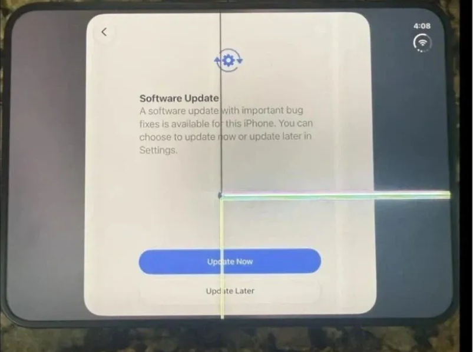
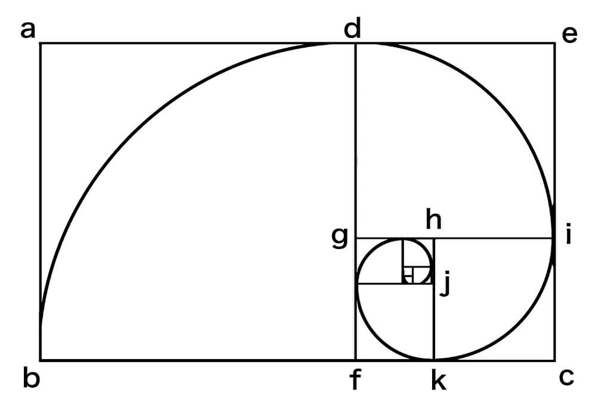
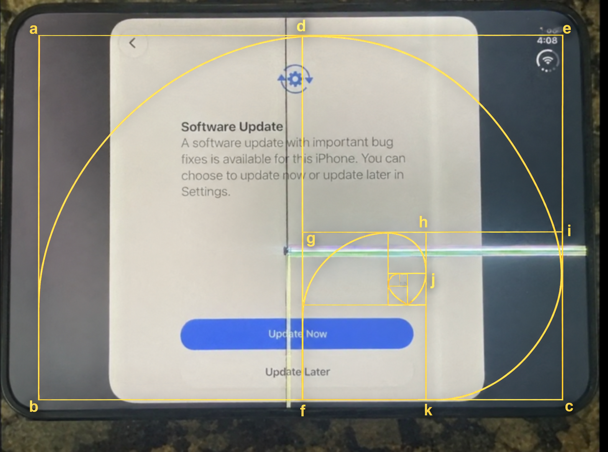

애플 - 액정의 황금비율적 재해석 : 기술과 예술의 경계를 넘어
본 제품에서 관찰되는 디스플레이의 선형적 흔적은 단순한 물리적 손상의 관점에서만 해석되어서는 안 된다. 이는 오히려 황금비율(Golden Ratio, φ ≈ 1.618) 이라는 고전적 미학의 원리가 현대 디지털 인터페이스와 조우하며 생성한 우연적 미학의 한 형태로 재해석될 수 있다.
고대 그리스의 조형 원리에서 르네상스의 회화, 그리고 현대의 시각 디자인에 이르기까지 황금비율은 인간의 지각과 조화, 균형에 관한 미학적 탐구의 중요한 참조점으로 기능해 왔다. 본 디스플레이에 나타나는 수직선과 수평선의 교차, 그리고 그로부터 확장되는 기하학적 분할은 이러한 비례 체계를 연상시키며, 일상적인 디지털 기기를 하나의 시각적 사유 공간으로 전환한다.
결론적으로, 본 디자인은 기술적 불완전성을 미학적 가능성으로 전환하고,
고전적 비례의 질서와 현대적 시각 경험을 연결함으로써
사용자에게 한층 입체적이고 고급스러운 디지털 경험을 제공하고자 한다.
황금비율을 제공하고
이해못하는 새끼들은 쓰지마라는 애플의 숭고한 정신이었던거임!

이것이 [황금의 회전]이다!